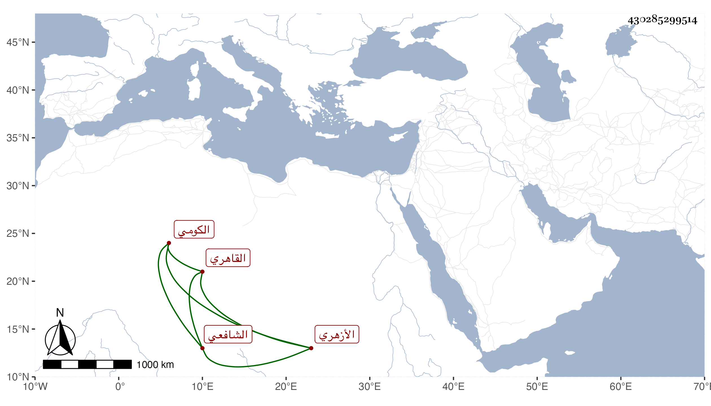

0902Sakhawi.DawLamic.ITO20230111-ara1.EIS1600.430285299514
Biography ID: 430285299514
607
علي بن أحمد بن علي العلاء أبو الحسن الكومي ثم القاهري الأزهري الشافعي ويعرف بالكومي . حفظ القرآن وجوده واشتغل بالفقه عند العبادي وغيره وسمع ومعه ابنه على أم هاني الهورينية وغيرها بعض الصحيح وتنزل في الصلاحية والبيبرسية وغيرهما وأم بجامع الفكاهين دهرا وهو أحد القائمين على البقاعي حين كان ناظره ومس ابن أخيه بسعايته بعض المكروه وندم الدوادار يشبك الفقيه على انجراره معه في شأنه ولم يلبث أن انتقم من البقاعي ، وكان العلاء خيرا متوددا مشاركا كتب بخطه الكثير . ومات في شوال سنة ثمان وثمانين وقد جاز الستين رحمه الله .
